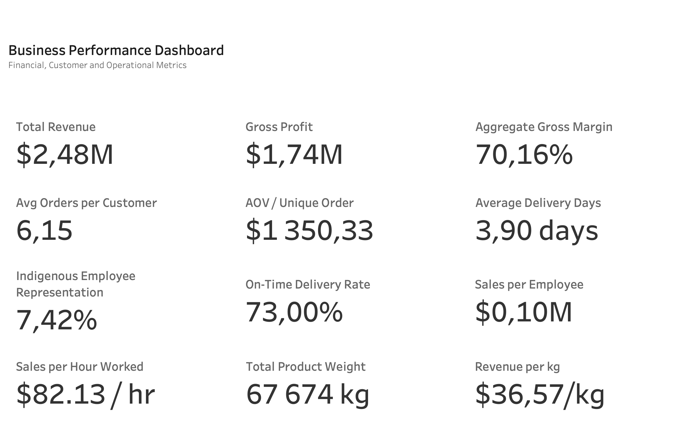

项目方法、核查与业务解读
以下链接包含可追溯的模型指标、图表数据口径和业务分析，帮助招聘方进一步核实作品。
FOR RECRUITERS · 精选项目
三个重点案例，覆盖建模、可视化与商业分析
精选案例均有真实项目证据。Clothing Fit 已公开含代码、模型指标及内嵌图表的运行完成Notebook；独立环境复现仍待验证。三项公开版已完成隐私与版本整理；课程项目是学习与实践成果，不是已部署的商业系统。
机器学习 · Python
服装尺码适配风险预测
比较分类模型，并以错码召回与误报权衡评估业务预警方案。
阅读案例与已核实指标 ↗0.5493 Macro F10.5196 错码召回率28,854 测试样本
当前模型结果请以公开Notebook中同一次运行生成的混淆矩阵与系数图为准。旧课程报告图已移至项目说明中的历史版本对照。
查看实际运行图表与代码 ↗Excel · Tableau 阅读贸易分析案例 ↗下载 Tableau 工作簿 ↗下载 Excel 分析表 ↗
阅读贸易分析案例 ↗下载 Tableau 工作簿 ↗下载 Excel 分析表 ↗
澳大利亚贸易与天然气出口展望
整理贸易结构、份额与历史趋势，呈现数据分析和可视化思路。
A$523,098m 2025出口A$62,232m 2025顺差
阅读贸易分析案例 ↗下载 Tableau 工作簿 ↗下载 Excel 分析表 ↗KPI · 商业分析
零售业平衡计分卡与KPI仪表板
设计跨财务、客户、流程和学习成长维度的经营绩效指标。
12项 KPI73% 准时交付率70.16% 汇总毛利率A$1,350.33 每唯一订单AOV

阅读KPI案例 ↗查看数据复核与指标口径 ↗下载脱敏 Tableau 工作簿 ↗招聘方快速导航
按岗位查看案例与实际证据；每个项目均区分已完成的分析、演示性质与尚未验证的环节。
真实性声明：所有项目均按课程材料和公开可核验文件呈现；Jubilee求职版采用汇总毛利率70.16%和唯一订单AOV A$1,350.33，原课程口径单独保留。课程结果不代表商业上线或审计结论。
按岗位选择简历项目
技术型数据分析 / Junior Data ScientistClothing Fit Prediction · 电商SQL数据库 · Python探索性分析
数据分析 / BIAustralian Trade & Gas Outlook · Jubilee KPI Dashboard · Clothing Fit Prediction
商业分析 / 客户与营销分析Jubilee KPI Dashboard · Australian Trade · Customer Analytics；原创女装经营经历可作为实践补充
以上为求职展示建议，不代表各项目都已完成证据核验。请以岗位JD调整排序。
点击卡片查看完整项目结构；勾选2–3个项目可在下方比较。带“待核实”的信息不会自动视为已完成成果。
项目对比
请在上方勾选需要比较的项目。
中文简历与面试讲解生成器
选择项目并点击“生成表述”。所有内容由已有项目事实组合生成；缺失信息会提示补充。
生成的是可编辑草稿。面试前请核对个人贡献，尤其是小组项目。
关于这个作品集
这是一个持续维护的求职项目目录，不把课程作业包装为商业委托，也不将提案设计写成已上线系统。原始文件、成绩、外部链接和个人贡献仅在有依据时展示。
编辑与更新：打开项目详情可在本浏览器临时编辑条目，并导出JSON备份。浏览器编辑仅保存在当前设备，不会自动同步到GitHub；公开网站的正式更新仍需提交仓库文件。不要在公开页面录入私人联系方式或敏感信息。
公开页面仅展示经整理的摘要。项目原始数据、部分课程文件、未核实结果及私有材料不会自动公开。请先核查再上传代码或数据。